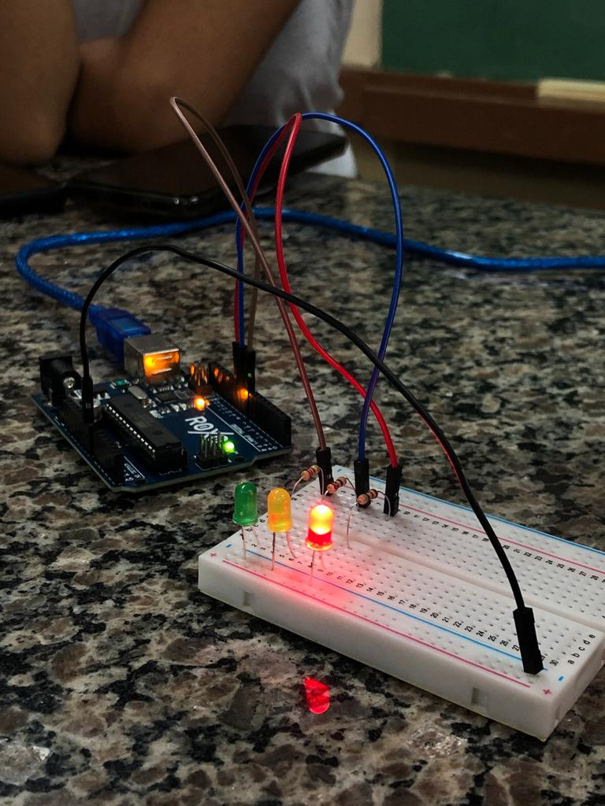
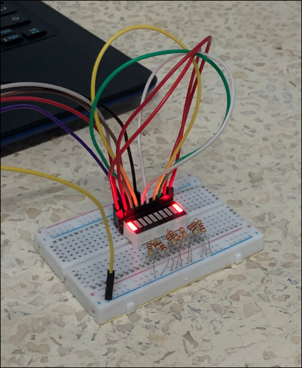

Nossos Projetos
Semáforo

Um projeto de semáfaro no arduino consiste em criar um semáfaro simples, utilizando LEDs nas cores verde, amarelo e vermelho um arduino uno, resistores de 220 ohms, jumpers e uma protoboard.
Onda Verde

O objetivo do nosso projeto simular um semáforo em onda verde é se trata de um tipo de coordenação semafórica em que uma corrente de
trânsito recebe indicação luminosa verde, em uma sequência de semáforos de uma determinada rede.
>
Buzzer

O buzzer é um dispositivo que emite som, quando configuramos ele, conseguimos colocar qualquer música de nossa preferência, basta ter as frequências das notas, e colocá-las nos códigos que ele irá começar tocar.
Super Máquina

A super máquina de 2008, é um barra gráfica de LEDS, que símula a boca do nosso robô.